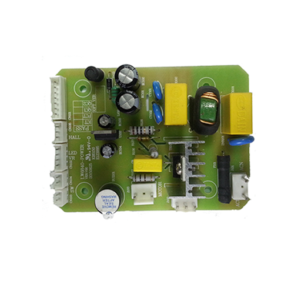
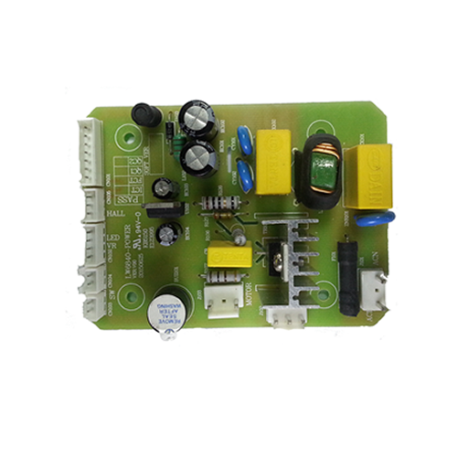

MicroTCA通信板卡话音调制业务板
双宽全高，规格可定制。 主处理器采用Mindspeed Comcerto 82359多核ARM处理器。 128M RAM，512M ROM，同时支持四路音频调制/解调。 与无线信道设备配合使用，适用于交通、矿山、国防等行业。
电磁加热方案
MT7688+STM32，OpenWrt+Liteos 丰富的Linux开发资源 高级物理api让单片机IO与实时应用无需考虑底层接口 QQ物联+AllJoyn 揭开I.o.T开发新一页
 

煲汤机控制板系列
CPU：MTK MT7688AN mips24k 主频580M，DDR2 256MB RAM，NOR FLASH 32MB ROM MCU：STM32F103，5*12位AD、26*GPIO、10*PWM@36MHz、CAN、3个定时器 5个百兆网口，支持Wi-Fi 802.11n 支持PCI-e X1、USB 2.0 HOST、2*UART SPI master/slave SD-XC接口，可外接micro-SD卡 4*PWM I2S (192K/24bit) 20*GPIO 支持WRTnode UIxO开发框架

USB话音手柄方案
支持WindowsXP等操作系统。 采用高性能硬件Audio Codec。 Atmel ARM Cortex-M4处理器。 支持拨号和PTT按键。 尺寸可根据需求定制。
搅拌棒控制板系列
CPU：MTK MT7628 mips24k 主频580M，DDR2 256MB RAM，NOR FLASH 32MB ROM 5个百兆网口，支持Wi-Fi 802.11n 支持PCI-e X1、USB 2.0 HOST、2*UART SPI master/slave SD-XC接口，可外接micro-SD卡 4*PWM I2S (192K/24bit) 20*GPIO 支持WRTnode UIxO开发框架
© CopyRight 2014-2018, www.zw-tech.com, Inc.All Rights Reserved. 备案号：京ICP备XXXXXXXX号-2